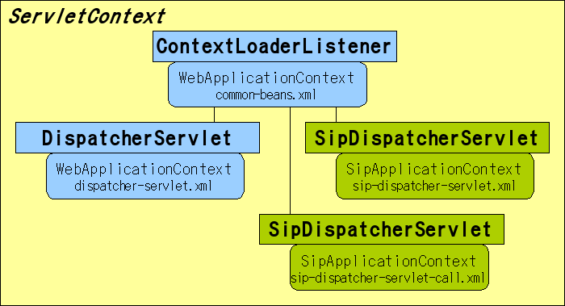

sf-api
アプリケーションの拡張
3PCCを実行する機能を追加します。
この場合、プロキシするSIPメッセージと3PCCによるSIPメッセージのメソッド(200/INVITE等) が重なる場合があります。
例えば、3PCCを実行したINVITE応答とプロキシしたメッセージのINVITE応答が同一Servletで処理 されることになり、メッセージの振り分けを行うハンドラの処理が複雑になります。
このため同一コンテキスト上で別アプリケーションとして処理することが望ましくなります。
sip.xmlの変更
以下の図ような構成にします。
このため、以下のようにsip.xmlを変更します。
<?xml version="1.0" encoding="UTF-8"?>
<sip-app xmlns="http://www.jcp.org/xml/ns/sipservlet"
xmlns:javaee="http://java.sun.com/xml/ns/javaee">
<app-name>sf-core-app</app-name>
<distributable />
<context-param>
<param-name></param-name>
<param-value></param-value>
</context-param>
<listener>
<listener-class>org.mobicents.ssf.servlet.SipDispatcherListener</listener-class>
</listener>
<servlet-selection>
<main-servlet>sip-dispatcher</main-servlet>
</servlet-selection>
<servlet>
<!-- Receive all inbound requests -->
<javaee:servlet-name>sip-dispatcher</javaee:servlet-name>
<javaee:servlet-class>org.mobicents.ssf.servlet.SipDispatcherServlet</javaee:servlet-class>
<javaee:load-on-startup>10</javaee:load-on-startup>
</servlet>
<!--
Receive all dispatcher requests from Web
-->
<servlet>
<javaee:servlet-name>sip-dispatcher-call</javaee:servlet-name>
<javaee:servlet-class>org.mobicents.ssf.servlet.SipDispatcherServlet</javaee:servlet-class>
<javaee:load-on-startup>11</javaee:load-on-startup>
</servlet>
<!--
<proxy-config>
<sequential-search-timeout>0</sequential-search-timeout>
</proxy-config>
-->
</sip-app>
Webからの呼出を受けるためのsip-dispatcher-callを追加しています。
また、SIPアプリケーションの呼出を行うweb.xmlでも変更を行う必要があります。 web.xmlは以下のようになります。
<?xml version="1.0" encoding="UTF-8"?>
<web-app xmlns="http://java.sun.com/xml/ns/j2ee"
xmlns:xsi="http://www.w3.org/2001/XMLSchema-instance"
xsi:schemaLocation="http://java.sun.com/xml/ns/j2ee http://java.sun.com/xml/ns/j2ee/web-app_2_4.xsd"
version="2.4">
<display-name>SSF Web Applications</display-name>
<distributable/>
<context-param>
<param-name>contextConfigLocation</param-name>
<param-value>
/WEB-INF/common-beans.xml
</param-value>
</context-param>
<listener>
<listener-class>org.springframework.web.context.ContextLoaderListener</listener-class>
</listener>
<servlet>
<servlet-name>dispatcher</servlet-name>
<servlet-class>org.springframework.web.servlet.DispatcherServlet</servlet-class>
<load-on-startup>2</load-on-startup>
</servlet>
<servlet>
<servlet-name>webDispatcher</servlet-name>
<servlet-class>org.mobicents.ssf.servlet.WebDispatcherServlet</servlet-class>
<init-param>
<param-name>targetSipServletName</param-name>
<param-value>sip-dispatcher-call</param-value>
</init-param>
<load-on-startup>2</load-on-startup>
</servlet>
<servlet-mapping>
<servlet-name>dispatcher</servlet-name>
<url-pattern>*.do</url-pattern>
</servlet-mapping>
<servlet-mapping>
<servlet-name>webDispatcher</servlet-name>
<url-pattern>/webDispatcher.html</url-pattern>
</servlet-mapping>
<welcome-file-list>
<welcome-file>index.jsp</welcome-file>
</welcome-file-list>
</web-app>
ここでは、WebDispatcherServletへの初期化パラメータ"targetSipServletName"として、sip.xmlにて 追加したsip-dispatcher-callを設定しています。
WebDispatcherServlet
WebDispatcherServletとは？
WebDispatcherServletはSipDispatcherServletと連携して、Webアプリ側からSipDispatcherServletを呼び出して SIP処理を実行するためのHttpServletです。
WebDispatcherServletは以下のように動作します。
- 初期化時
初期化パラメータから"targetSipServletName"を取得します。
- 呼出時
- targetSipServletNameが指定されていた場合、指定された名前のSipDispatcherServletを ServletContextから取得します。 指定されていない場合、ServletContextの属性値でSipDispatcherServletとなっているものを取得します。
- HttpServletRequest.requestParameterMap()からリクエスト情報を取得します。
- リクエストパラメータもしくはリクエストの属性値にWebDispatcherServlet.SIP_APPLICATION_SESSION_IDが 指定されていた場合、指定されたSipApplicationSessionのIDを使用してSIP処理を行います。 指定されていない場合、新規にSipApplicationSessionを作成します。
- リクエストパラメータもしくはリクエストの属性値にWebDispatcherServlet.SYNC_CALLが指定 されており、その値が"true"の場合に同期処理します。 それ以外の場合、非同期に処理します。 同期処理を行った場合、コンテナ側の同期機能（SipApplicationSessionによる同期処理等）を利用することが できません。このため、SIPメッセージを送信するような処理の場合には非同期処理で行うことを強く推奨します。
以上のように動作することで、Webアプリ等からSIP処理を行うことが可能です。 SIPメッセージに関する同期処理はSIP Servlet コンテナの機能となりますので、それぞれのコンテナの機能を確認してください。
WebDispatcherServletの呼出
"webDispatcher"の名前でWebDispatcherServletが登録されている場合、JSPやServlet等からの WebDispatcherServletの呼び出し方は以下のようになります。
RequestDispatcher dispatcher = req.getSession().getServletContext().getNamedDispatcher("webDispatcher");
dispatcher.include(req, res);
String id = (String)req.getAttribute(WebDispatcherServlet.SIP_APPLICATION_SESSION_ID);
if(logger.isDebugEnabled()) {
logger.debug("id:" + id);
}
呼出後、SSFで新規に生成されたSipApplicationSessionのIDはリクエストの属性値として設定されています。 このIDをHttpSessionやユーザ情報に関連づけることで、後に呼の終了等を行うことが可能となります。
Webアプリからの呼出を処理するハンドラの作成
@Component
public class CallHandler {
private Logger logger = LoggerFactory.getLogger(CallHandler.class);
@DispatcherMapping(params={"exec=makeCall"})
public void makeCall(DispatcherParams params, Conference conf, Call call) throws Exception {
if(logger.isDebugEnabled()) {
logger.debug("params:" + params);
}
String p = params.getParameterAsString("parties");
String mode = params.getParameterAsString("mode");
String[] parties = toArray(p);
SipApplicationSession appSession = params.getApplicationSession();
call.setSipApplicationSession(appSession);
conf.startCall(call, parties, mode);
}
public String[] toArray(String p) {
StringTokenizer token = new StringTokenizer(p, " ,");
ArrayList<String> list = new ArrayList<String>();
while(token.hasMoreTokens()) {
list.add(token.nextToken());
}
return list.toArray(new String[]{});
}
}
アノテーションの説明です。
- @DispatcherMapping
SSF独自のアノテーションです。 この場合、呼出し時にパラメータ名"exec"、パラメタ値"makeCall"の場合に呼び出されます。 また、メソッドの引数にはSpringのApplicationContextで管理されているBeanを利用可能です。
この場合、DispatcherParams,Conference,CallがSSFにより注入されています。 DispatcherParamsはWebDispatcherServlet呼出時のHTTPリクエストのパラメータを ラップしています。
各処理を行うBeanの作成
3PCCを実行するため、以下のBeanをSpringFrameworkに登録しています。
- LocationService
プロキシおよび登録サーバ（Registrar）にて使用される、UE（ユーザ端末）のContact情報を登録/取得するための singleton ScopeのBeanです。
- UserManagementService
登録サーバ（Registrar）にて使用される、ユーザ情報を管理するためのsingleton ScopeのBeanです。
- Conference
呼を開始するためのsingleton ScopeのBeanです。 Callに対する基本的な操作を行うためのクラスとして利用します。
- Call
呼を管理するためのsipApplicationSession Scope のBeanです。
これらのBeanはメソッド呼出時等に引数として指定した場合、自動的にSSFにより注入されます。
以下、3PCC開始時のシーケンスは以下のようになります。

- WebDispatcherServletを呼出
WebアプリがWebDispatcherServetを呼び出します。 SSFはSipApplicationSessionの作成を行い、イベントの作成およびイベントマッピングによる ハンドラの作成等を行います。
- Conferenceインスタンスの取得
CallHandler.makeCall()の引数をApplicationContextから取得します。
- Callインスタンスの生成
CallHandler.makeCall()の引数をsipApplicationSession Scope で生成します。
- CallHnadler.makeCall()の呼出
呼を開始するため、CallHandlerを呼び出します。 DispatcherParamsから必要な情報を取得し、Conferenceを呼び出します。
- Conference.startCall()の呼出
Conferenceを開始するために呼び出します。
- Call.addParty()の呼出
3PCC開始前に参加者の追加を行います。
Scopeを"sipApplicationSession"とすることで、SipApplicationSessionとCallの インスタンスは一対一になっており、Bean作成者はSipApplicationSessionの属性情報の 管理等を意識する必要はありません。
- Call.start()の呼出
3PCCを開始します。
Call.addParty()で追加された１番目の参加者に対してINVITEの送信が行われます。
以上のようにして、Beanの組み合わせで3PCCの開始処理を行うことが可能です。
この他の処理については、各Beanのソースを参照してください。
このように、SSFを利用することで、SIPの処理を単純なBeanの単位に分割することが容易になっています。 SIP Servlet APIにおいてもSipServletを工夫することで可能ですが、SSFを利用することで 無駄な記述を大幅に削減できます。